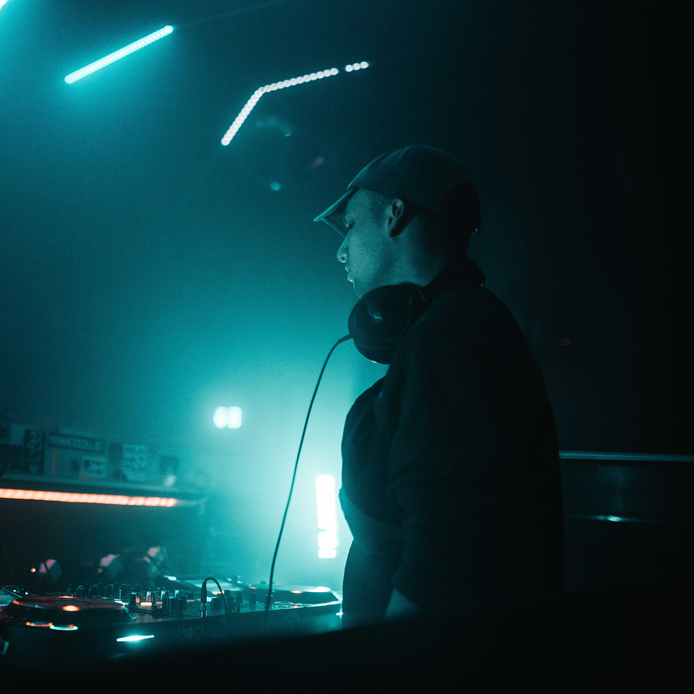

Plate A · HaukeAudio Engineer
Recording · Sound
Hauke Steinbach
Hauke is an audio engineer. He records the instruments on location, from placing the microphones in a village church to editing every single sample, and shapes the sound of each library until it plays like the original.
He also runs a mixing and mastering studio in Hamburg, which is where the obsession with honest, unpolished sound comes from.